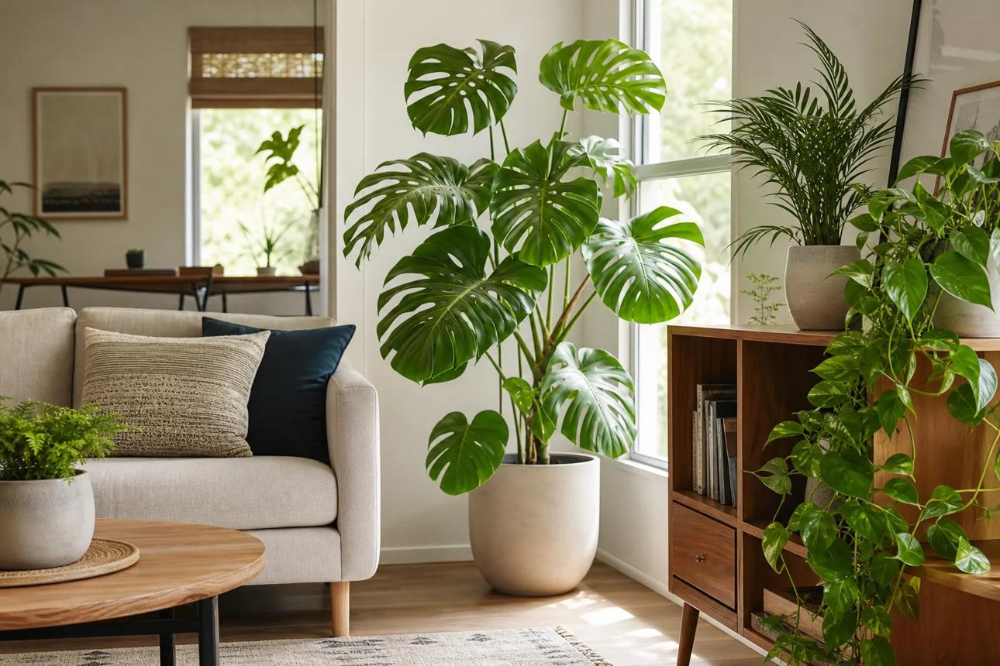
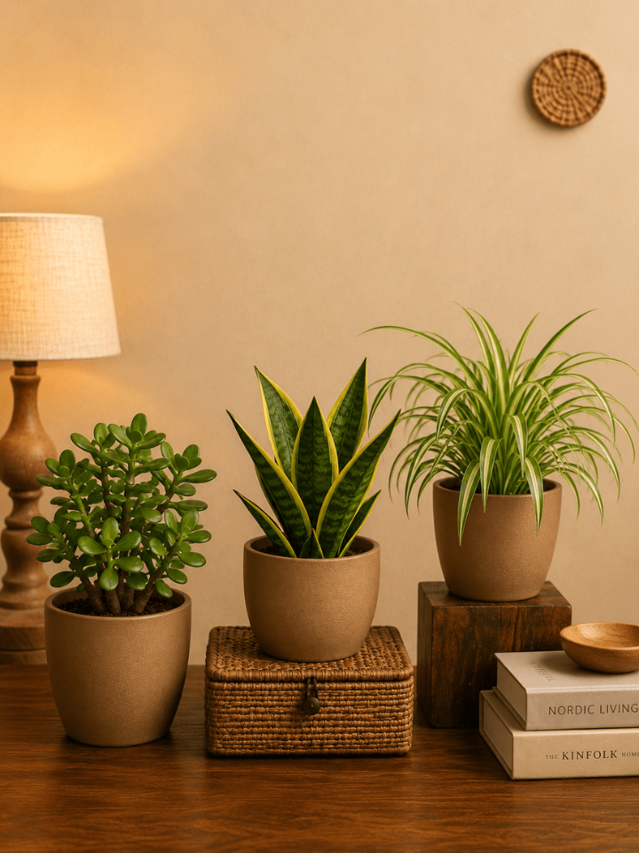

THE WORLD OF INDOOR PLANTS
Learn How to Care for Your Plants
How to Care for Indoor Plants
Indoor plants need proper care, attention and a suitable environment to grow healthy and beautiful. Every plant has different requirements for water, sunlight and soil.
Whether you are a beginner or an experienced gardener, learning basic plant care techniques will help you maintain a beautiful indoor garden.
Beautiful Indoor Plant Gallery

Beautiful Green Plants
Bring natural beauty into your home.

Grow Your Indoor Garden
Create a peaceful green environment.

Live With Nature
Enjoy the beauty of indoor gardening.
Essential Plant Care Tips

1. Watering
Water is essential for plant growth. Check the soil before watering. If the top layer feels dry, add water. Avoid overwatering because excess water can damage plant roots.

2. Sunlight
Sunlight helps plants produce the energy they need to grow. Place indoor plants near suitable windows. Some plants prefer bright indirect light, while others tolerate lower light.

3. Clean the Leaves
Dust can collect on plant leaves. Clean them gently with a soft, damp cloth. Clean leaves help plants receive light properly.

4. Good Soil
Healthy soil provides nutrients and support for plant roots. Use a suitable potting mix with good drainage to prevent excess water from collecting.

5. Fertilizer
Plants need nutrients to grow. Use a suitable fertilizer according to the plant's requirements. Follow the recommended quantity and avoid excessive fertilizer.

6. Remove Dry Leaves
Remove dead and yellow leaves regularly. Use clean gardening scissors when necessary. This keeps your plants neat and makes maintenance easier.
Easy Plants for Beginners

Snake Plant
A hardy indoor plant that can tolerate lower light conditions and infrequent watering.

Money Plant
A popular climbing plant that can grow in containers and hanging pots.
.jpg)
Peace Lily
A beautiful flowering indoor plant that prefers bright, indirect light and consistently moist soil.
🎧 Listen and Learn
Listen to our indoor plant audio and enjoy learning more about the natural world.
📖 Indoor Plant Care Guide
Learn more about indoor gardening, plant maintenance and growing healthy plants.
Read Plant Care Guide (PDF)